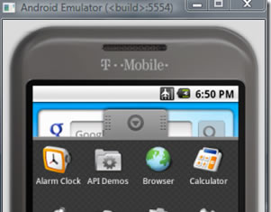
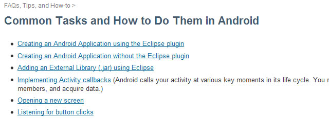

出处：A Useful Selection of Android Developer Tools and Resources
在google、开源平台，和来自移动电话制造商HTC,Samsung和Sony Ericsson的支持下，Android平台在市场占有率上相比去年取得的886%增长！如果我只看增长率，IPhone据统计才有61%的增长。这些数据可以给你关于两个平台流行度的印像，但是事实上，这些数据告诉了智能机开发员的谁才是真正的赢家。在时下，智能机越来越流行，因此成为一个快速增长的Android平台的智能机开发人员将会是一个不错的选择。
相比较其他的平台，Android不依赖于任何约束第三方应用程序的私有的操作系统（题外话：美国最近宣布对于IPhone的破解和越狱是合法行为），Android本身就是开源的。由于开源，Android有巨大的开发社区支持。各种个样的例子和教程，GUI素材，和开发工具下载。几乎所有的都是免费提供的。我们选出接近20个可以免费或开源的，工具，资源，开发指南。希望这些资源能给你的Android应用带来帮助。
相关文章参看:

如果你刚步入Android的开发，那么对于第一次开发Android应用程序的你来说，这本书是非常适合的。这本只有62页的PDF电子书里，有简单易懂的入门教程，帮助你在没有任何Android开发知识的背景下，教你开发Android应用程序。
Free Android Developer Ebook: andbook! →

专业Android应用程序开发PDF电子书，是一本创建移动手机应用程序的上手指南，这本书特点简洁，还有着能帮助你快速构建真实Android移动电话应用程序的典型的例子。本书覆盖了Android手机所有本质特性，并同时展示了Android手机的高级特性。
Free Android Developer Ebook: Professional Android Application Development →

对于那些想测试驱动Android的开发者，可以使用这个Android模拟器，这个模拟器以单独的应用程序的形式独立运行在Windows PC之上，使用这个模拟器不用下载和完全安装复杂的Android开发包。你甚至可以在这个模拟器上安装和测试Android系统兼容的应用程序。
Android Emulator on Windows →

Android的开发包中包含了一个移动设备模拟器。这个模拟器模仿了典型移动设备的硬件和软件特性(当然，不包含打电话)。这个模拟器提供各种个样的导航和控制按键，可以使用你的鼠标和键盘来“按”下这些按键为你的应用程序生成事件。这个模拟器也提供一个屏幕为你显示应用程序。同时，SDK中提供了很多能在模拟器上运行的应用程序。
Android Emulator from The Developer’s Guide →

感应模拟器是一个JAVA独立应用程序，感应模拟器模拟感应数据并把数据传给Android模拟器。这个感应模拟器可以让你模拟加速度仪器，指南针，和方向感应，这些数据可以用于Android应用程序，并通过感应器进行控制。
SensorSimulator →
DroidEx 可以让你附加的Android设备的显示屏内容复制一份到你的开发机屏幕。使用DroidEx来做演示是非常有用的。因为你可以把你的Android设备连接到你的笔记本电脑上或投影仪上，你的客户就可以通过这些设备来看你Android设备上的内容。DroidEx还可以用来演示那些用模拟器不方便演示的内容，比如说GPS或加速度仪器等内容。
DroidEx: Projecting Android on the Big(ger) Screen →

Android 的App Inventor是来自Google为非开发人员准备的新工具，通过这个工具，非开发人员可以非常容易地在里面创建应用程序。可以通过网站的视屏来预览这个工具的功能特性。(你可以参看酷壳的这篇文章)

这是一个关于Android开发可能遇到的常用任务列表集合，并提供了一个快速、 how-to方式的帮助，来帮助你完成这些任务。
Common Tasks and How to Do Them in Android→

快速启动小抄是一个非常实用和快速的列表，这个列表中罗列一些关于快速启动的相关任务。
Fastboot Cheat Sheet →
在这里你可以找一些到官方文章的连接，这些连接来自于“The Developer’s Guide”。这些文章的内容描述了关于Android可视交互应用程序的UI设计开发的指导原则。
理解Android中的用户接口 来自于mobiforge.com
这4部分的文档来自于mobiforge.com,文档中包含了组成Android UI的各种要素。文档的第一部分讨论Android中各种各样的有效的的布局。


DroidDraw是一个为Android创建图形用户界面的UI设计器。它是一个独立的可执行程序，可以运行在Mac OS X，Windows和Linux上。
DroidDraw : Graphical User Interface Editor for Android →

Android GUI Starter Kit包里面包含了多个按钮元素和不同接口选项的AndroidGUI内容。这些元素是基于Android1.5 GUI的，并且这些包里面的被提供给开源社区的Android应用程序模型。大部分的GUI元素和手机图例都是使用向量路径制成，所以他们非常地容易被缩放。对于文本AndroidSans包被使用。
Android GUI PSD Vector Kit →

在Fireworks模板中，Android的各种元素被以向量图形的方式被重绘。在目录中，这些元素的名称大多根据Android词汇表被命名。
Fireworks Template for Android →
线框PDF是信纸大小（8.5英寸 * 11英寸）并且各部件都被拉伸。因此你可以非常容易的以纸张原型或拉伸为真实尺寸的方式来使用。如果你没有信纸，你可以用A4纸来打印。
Android Wireframe Templates →
你也可以参考：
（全文完）
（转载本站文章请注明作者和出处 酷 壳 – CoolShell ，请勿用于任何商业用途）